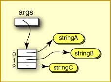

FRAGE 9:

Was würde die folgende Anweisung ausgeben?
System.out.println( args[0] );
strArray[0] = "Good-bye" ;
Das wird die Referenz in Slot 0 durch die Referenz auf einen neuen String ersetzen, der die Zeichen "Good-bye" enthält.
Jeder Slot eines Array von Objektreferenzen funktioniert genauso wie
eine ganz gewöhnliche Objektreferenzvariable.
In der Frage beginnt strArray[0] mit einer Referenz auf einen
String, um dann eine Referenz auf einen anderen String zugewiesen zu bekommen.
Der erste String ist jetzt Datenausschuss.
Hier ist die bekannte Signatur der
main()
public static void main( String[] args )
Der Ausdruck
String[] argsmain()main()
C:\>java StringDemo stringA stringB stringC
Die Abbildung zeigt wie der Parameter args aussieht,
während main()
Was würde die folgende Anweisung ausgeben?
System.out.println( args[0] );